Image Approximation with Orthogonal Bases
This numerical tour uses several orthogonal bases to perform non-linear image approximation.
Contents
Important: Scilab user have to call the function extend_stack_size(4) before starting the tour to be able to handle large images.
Installing toolboxes and setting up the path.
You need to download the following files: signal toolbox and general toolbox.
You need to unzip these toolboxes in your working directory, so that you have toolbox_signal and toolbox_general in your directory.
For Scilab user: you must replace the Matlab comment '%' by its Scilab counterpart '//'.
Recommandation: You should create a text file named for instance numericaltour.sce (in Scilab) or numericaltour.m (in Matlab) to write all the Scilab/Matlab command you want to execute. Then, simply run exec('numericaltour.sce'); (in Scilab) or numericaltour; (in Matlab) to run the commands.
Execute this line only if you are using Matlab.
getd = @(p)path(p,path); % scilab users must *not* execute this
Then you can add the toolboxes to the path.
getd('toolbox_signal/'); getd('toolbox_general/');
Best \(M\)-terms Non-linear Approximation
This tours makes use of an orthogonal base \( \Bb = \{ \psi_m \}_{m=0}^{N-1} \) of the space \(\RR^N\) of the images with \(N\) pixels.
The best \(M\)-term approximation of \(f\) is obtained by a non-linear thresholding \[ f_M = \sum_{ \abs{\dotp{f}{\psi_m}}>T } \dotp{f}{\psi_m} \psi_m, \] where the value of \(T>0\) should be carefully selected so that only \(M\) coefficients are not thresholded, i.e. \[ \abs{ \enscond{m}{ \abs{\dotp{f}{\psi_m}}>T } } = M. \]
The goal is to use an ortho-basis \( \Bb \) so that the error \( \norm{f-f_M} \) decays as fast as possible when \(M\) increases, for a large class of images.
This tour studies several different orthogonal bases: Fourier, wavelets (which is at the heart of JPEG-2000), cosine, local cosine (which is at the heart of JPEG).
First we load an image of \( N = n \times n \) pixels.
n = 512;
f = rescale( load_image('lena', n) );
Display it.
clf; imageplot(f);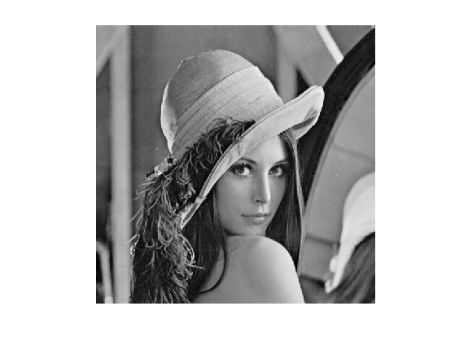
Fourier Approximation
The discrete 2-D Fourier atoms are defined as: \[ \psi_m(x) = \frac{1}{\sqrt{N}} e^{ \frac{2i\pi}{n} ( x_1 m_1 + x_2 m_2 ) }, \] where \( 0 \leq m_1,m_2 < n \) indexes the frequency.
The set of inner products \( \{ \dotp{f}{\psi_m} \}_m \) is computed in \(O(N \log(N))\) operations with the 2-D Fast Fourier Transform (FFT) algorithm (the Matlab function is fft2).
Compute the Fourier transform using the FFT algorithm. Note the normalization by \(1/\sqrt{N}\) to ensure orthogonality (energy conservation) of the transform.
fF = fft2(f)/n;
Display its magnitude (in log scale). We use the function fftshift to put the low frequency in the center.
clf; imageplot(log(1e-5+abs(fftshift(fF))));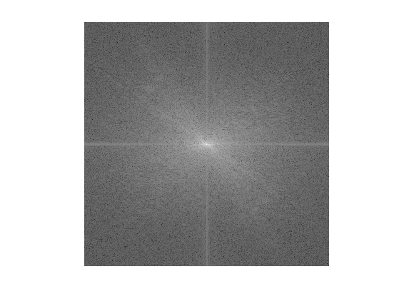
An image is recovered from a set of coefficients \(c_m\) using the inverse Fourier Transform (Matlab function ifft2) than implements the formula \[ f_M = \sum_m c_m \psi_m. \]
Performs a thresholding.
T = .3; c = fF .* (abs(fF)>T);
Inverse the Fourier transform.
fM = real(ifft2(c)*n);
Display the approximation.
imageplot(clamp(fM));
Exercice 1: (check the solution) Compute a best \(M\)-term approximation in the Fourier basis of \(f\), for \(M \in \{N/100, N/20\}\). Compute the approximation using a well chosen hard threshold value \(T\).
exo1;

The best \(M\)-term approximation error is computed using the conservation of energy as \[ \epsilon[M]^2 = \norm{f-f_M}^2 = \sum_{ \abs{\dotp{f}{\psi_m}} \leq T } \abs{\dotp{f}{\psi_m}}^2. \]
If one denotes by \( \{ c_R[k] \}_{k=0}^{N-1} \) the set of coefficients magnitudes \( \abs{\dotp{f}{\psi_m}} \) ordered by decaying magnitudes, then this error is easily computed as \[ \epsilon[M]^2 = \sum_{k=M}^{N-1} c_R[k]^2 = \norm{f}^2 - \sum_{k=0}^{M-1} c_R[k]^2. \] This means that \(\epsilon^2\) is equal to \(\norm{f}^2\) minus the discrete primitive of \( c_R^2 \).
Exercice 2: (check the solution) Compute and display in log scales the ordered coefficients \(c_R\). Hint: a discrete primitive can be computed using the function cumsum.
exo2;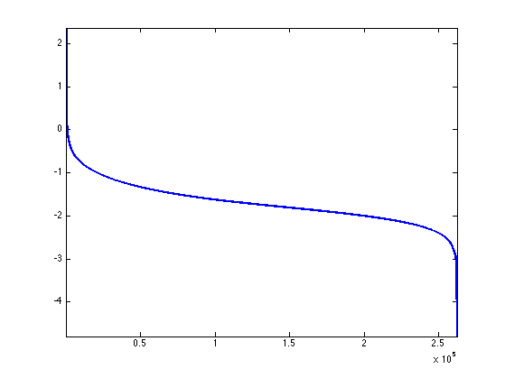
Exercice 3: (check the solution) Compute and display in log-scale the non-linear approximation error \(\epsilon[M]^2\). Store the values of \(\epsilon[M]^2\) in a vector err_fft.
exo3;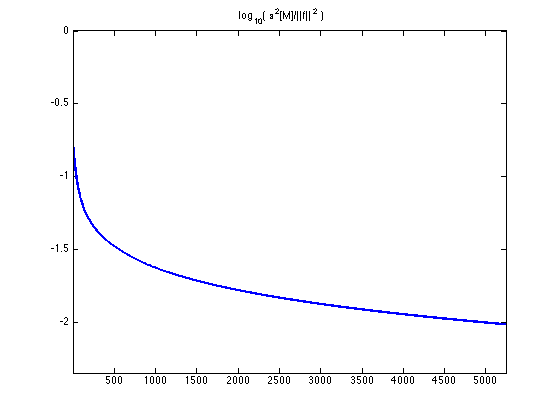
Wavelet Approximation
The Wavelet basis of continuous 2-D functions is defined by by scaling and translating three mother atoms \( \{\psi^H,\psi^V,\psi^D\} \): \[ \psi_{j,n}^k(x) = \frac{1}{2^j}\psi^k\pa{\frac{x-2^j n}{2^j}} \]
Non-linear wavelet approximation is a the heart of the JPEG-2000 compression standard.
The set of inner products \( \{ \dotp{f}{\psi_m} \}_m \) is computed in \(O(N)\) operations with the 2-D Fast Wavelet Transform algorithm.
Perform a wavelet transform. Here we use a daubechies wavelet transform.
Jmin = 1;
options.h = compute_wavelet_filter('Daubechies',10);
fW = perform_wavortho_transf(f,Jmin,+1, options);
Display the coefficients.
clf;
plot_wavelet(fW,Jmin);
title('Wavelet coefficients');
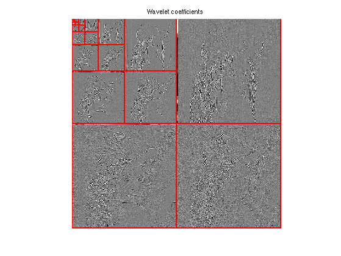 Exercice 4: (check the solution) Compute a best \(M\)-term approximation in the wavelet basis of \(f\), for \(M \in \{N/100, N/20\}\). Compute the approximation using a well chosen hard threshold value \(T\). Note that the inverse wavelet transform is obtained by replacing the +1 by a -1 in the definition of the transform.
exo4;
Exercice 5: (check the solution) Compute and display in log-scale the non-linear approximation error \(\epsilon[M]^2\). Compares the Fourier and wavelets approximations. Store the values of \(\epsilon[M]^2\) in a vector err_wav.
exo5;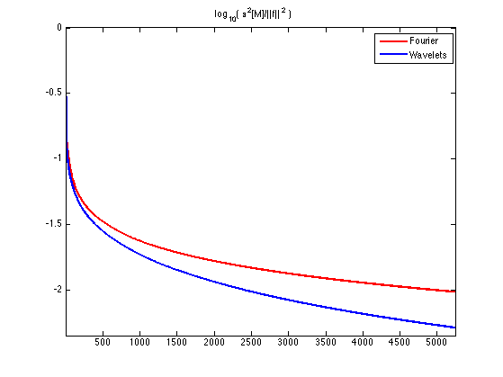
Cosine Approximation
The discrete cosine approximation (DCT) is similar to the Fourier approximation, excepted that it used symmetric boundary condition instead of periodic boundary condition, and is thus more useful to approximate image.
A 1-D cosine atom of \(n\) sample is defined as \[ \bar\psi_m(x) = \frac{1}{\sqrt{N}} \cos\pa{ \frac{2\pi}{N} (x-1/2) m }. \] A 2-D cosine atom is obtained by tensor product of 1-D atoms \[ \psi_{m_1,m_2}(x_1,x_2) = \bar\psi_{m_1}(x_1) \bar\psi_{m_2}(x_2). \] On the contrary to the Fourier 2-D atoms, these 2-D DCT atoms are not oriented (they contains 4 Fourier frequencies).
The set of inner products \( \{ \dotp{f}{\psi_m} \}_m \) is computed in \(O(N \log(N))\) operations with the 2-D Fast Cosine Transform algorithm (the Matlab function is dct2).
fC = dct2(f);
Display the magnitude of the DCT coefficients. Note that the low frequencies are in the upper-left corner.
clf; imageplot(log(1e-5+abs(fC)));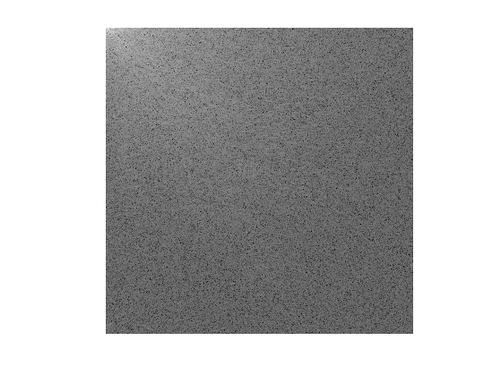
Exercice 6: (check the solution) Compute a best \(M\)-term approximation in the wavelet basis of \(f\), for \(M \in \{N/100, N/20\}\). Compute the approximation using a well chosen hard threshold value \(T\). Note that the inverse DCT transform is obtained with the function idct2.
exo6;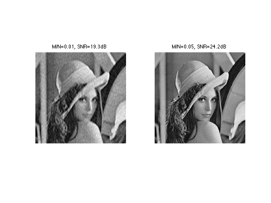
Exercice 7: (check the solution) Compute and display in log-scale the non-linear approximation error \(\epsilon[M]^2\). Compares the Fourier and DCT approximations. Store the values of \(\epsilon[M]^2\) in a vector err_dct.
exo7;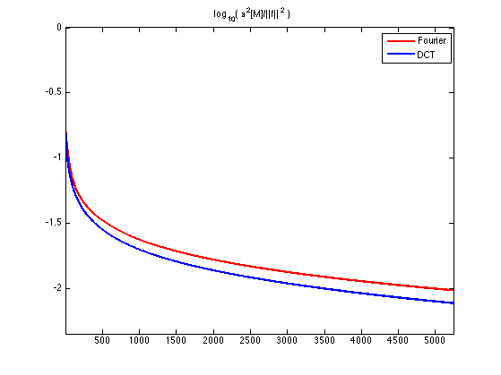
Local Cosine Approximation
To improve the global DCT approximation, one can approximate independantly small patches in the image. This corresponds to a decomposition in a local cosine basis, which is at the heart of the JPEG image compression standard.
The only parameter of the transform is the size of the square.
w = 16;
Initialize at zero the transformed image in the local DCT basis.
fL = zeros(n,n);
Example of patch index.
i = 5; j = 7;
For a given path index (i,j), we extract an (w,w) patch.
seli = (i-1)*w+1:i*w; selj = (j-1)*w+1:j*w; P = f(seli,selj);
Compute the Cosine transform of the patch using the fast DCT algorithm.
fL(seli,selj) = dct2(P);
Display the patch and its coefficients. We removed the low frequency of P for display purpose only.
clf; imageplot(P,'Patch',1,2,1); imageplot(dct2(P-mean(P(:))),'DCT',1,2,2);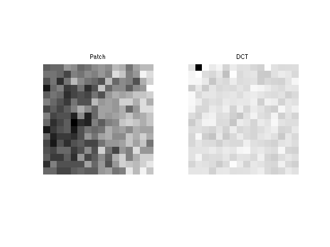
Exercice 8: (check the solution) Compute the local DCT transform fL by transforming each patch.
exo8;
Display the coefficients.
clf; imageplot(min(abs(fL),.005*w*w));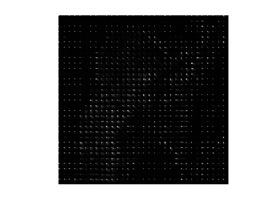
Exercice 9: (check the solution) Compute the inverse local DCT transform of the coefficients fL by inverse transforming each patch using the function idct2.
exo9;
Error |f-f1|/|f| = 3.8496e-16
Exercice 10: (check the solution) Compute a few best m-term approximations in the Local DCT basis of f.
exo10;
Exercice 11: (check the solution) Compute and display in log-scale the non-linear approximation error \(\epsilon[M]^2\). Store the values of \(\epsilon[M]^2\) in a vector err_ldct. Compares the Fourier, Wavelets, DCT and local-DCT approximations.
exo11;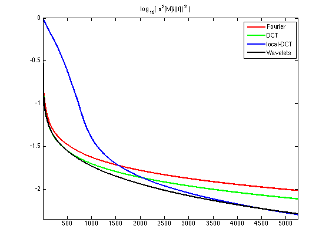
Comparison of Wavelet Approximations of Several Images
An image is more complicated than an other one for a given orthogonal basis if its approximation error decays more slowly.
First load several high resolution images.
n = 512; fList(:,:,1) = rescale( load_image('regular3',n) ); fList(:,:,2) = rescale( load_image('phantom',n) ); fList(:,:,3) = rescale( load_image('lena',n) ); fList(:,:,4) = rescale( load_image('mandrill',n) );
Display them.
clf; for i=1:4 imageplot(fList(:,:,i),'', 2,2,i); end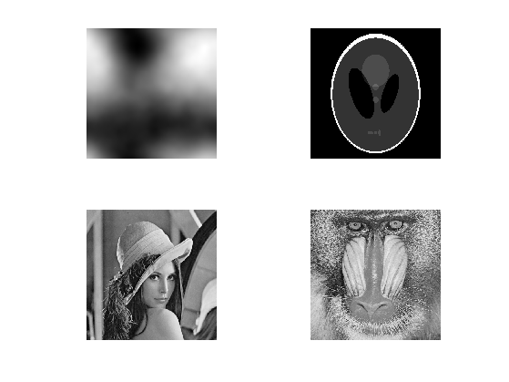
Exercice 12: (check the solution) Compare the approximation error decay for those images. Display \( \log_{10}(\norm{f-f_M}) \) as a function of \(\log_{10}(M)\).
exo12;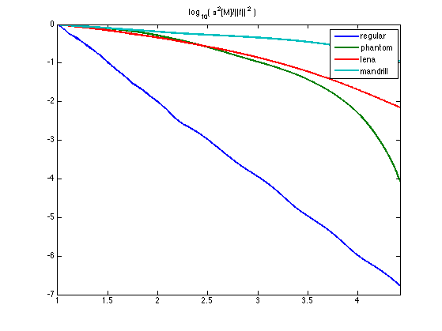